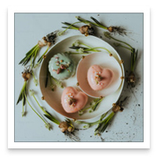
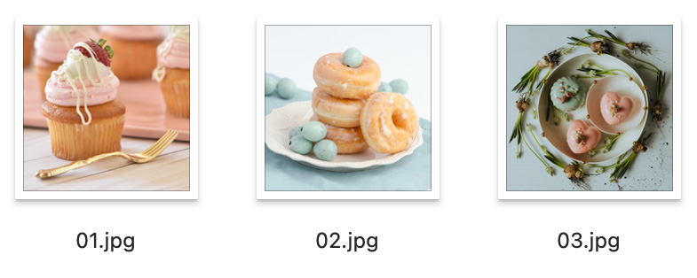
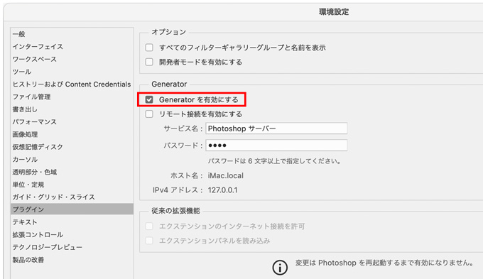
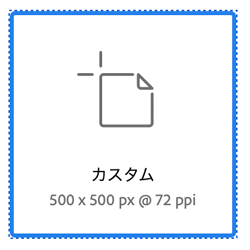
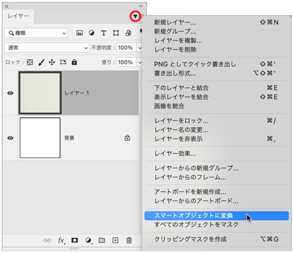
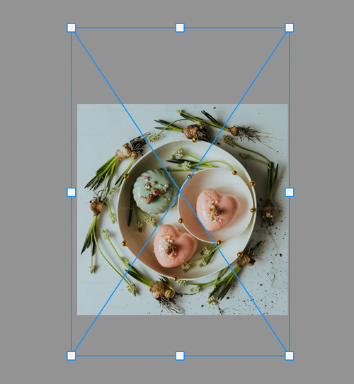
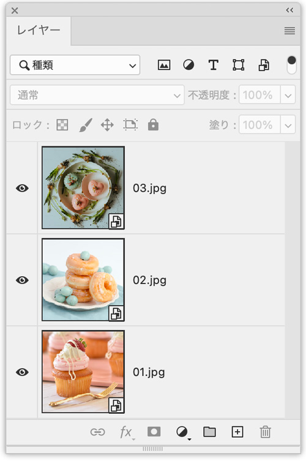
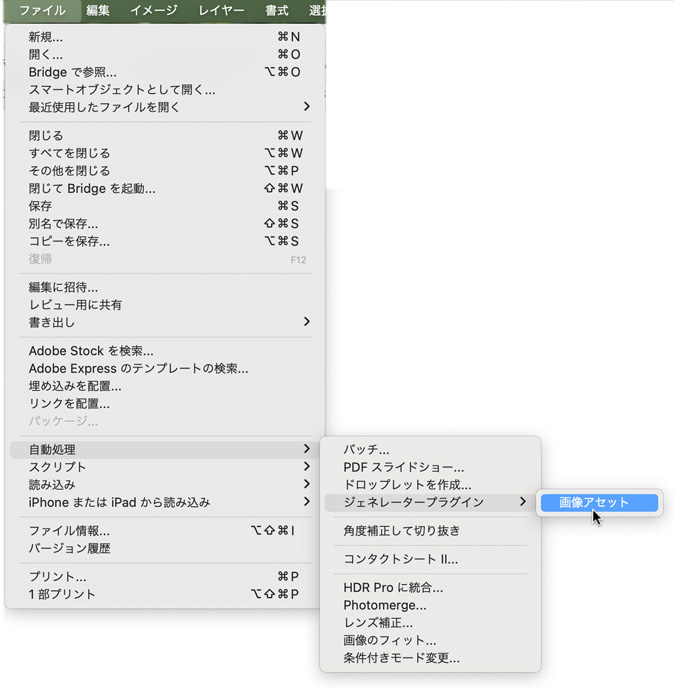
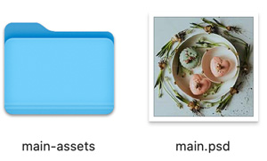
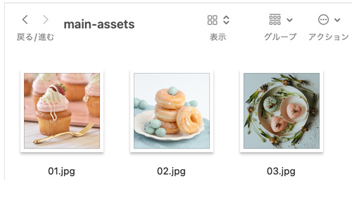

生成→画像アセット

- Photoshopで「レイヤー名」の自動書き出し機能
unsplash.com
unsplash.com
unsplash.com

環境設定の確認
- 「プラグイン」→「Generatorを有効にする」にチェック

新規ファイル作成
- 今回は、500px X 500px で

画像を配置後「スマートオブジェクトに変換」
- コピー＆ペーストで配置
- レイヤーパネル「スマートオブジェクトに変換」

画像をトリミング
- 「編集」メニュー → 「自由変形」でトリミング（大きさを調整）
- 「縦横同比率」で縮小する場合は、「Shift」キーを押しながら変形する

レイヤー名に拡張子をつける
- 数枚の「レイヤー」が出来たら、「レイヤー名」を、書き出したい「ファイル名」と「拡張子」を入力する

画像アセット
- レイヤーが作成してある状態で「PSD」として、名前をつけて保存（仮に、main.psd とします）
- そのファイルのとなりに「画像アセット」でフォルダーが自動作成されます


